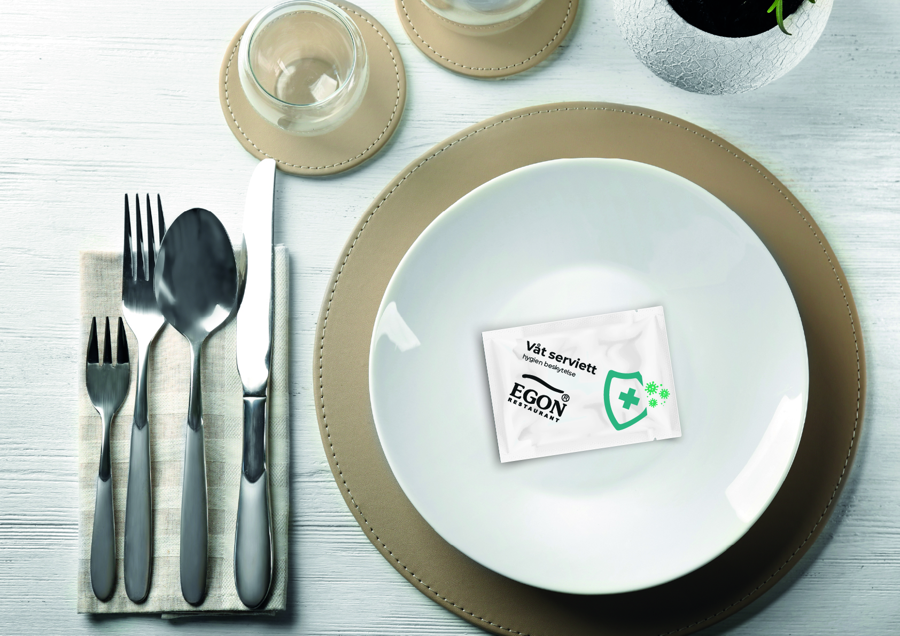

Andre beskrivelsesdel: konseptretning, prioriteringer og sentrale designvalg for funksjon, form og produksjonsgrunnlag.
advanced-project
Kort beskrivelse av prosjektet: en mer detaljert case-mal for prosjekter med flere leveransefaser.

Første beskrivelsesdel: introduksjon av utfordring, brukerbehov og forutsetninger for prosjektet.
Andre beskrivelsesdel: konseptretning, prioriteringer og sentrale designvalg for funksjon, form og produksjonsgrunnlag.

Tredje beskrivelsesdel: validering, iterasjoner og hvordan løsningen ble forbedret før ferdigstilling.

Fjerde beskrivelsesdel: leveranse, overføring til produksjon og anbefalt neste steg etter prosjektperioden.
Send en kort forespørsel, så finner vi en praktisk retning for produktet ditt.
Gå til forespørselsskjema